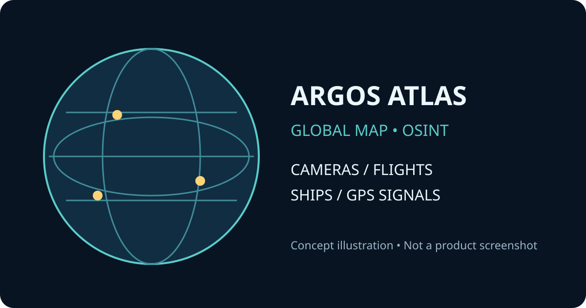

Instagram｜ARGOS ATLAS 全球地圖：攝影機、航班、船舶與 GPS 干擾
一句話摘要
@theroguecoder 分享 ARGOS ATLAS 全球地圖；官網列出公開攝影機、航班、船舶、衝突及 GPS 干擾等資訊，但攝影機總數不等於直播影片數，數據與即時性均未經本次獨立驗證。

貼文與官方資訊
Instagram 貼文文字稱可查看 20 萬以上直播攝影機，還有航班、船舶、戰區、GPS 干擾及當日地震，並稱 3D 地球屬付費方案。本次讀取公開貼文文字，影片音訊未可靠轉錄，不能視為完整逐字稿；未追蹤留言索取連結或私訊。
2026 年 11 月 28 日查核官網首頁：網站自稱有 226,265 個公開攝影機、交通攝影機與網路攝影機，其中 24,965 個串流即時影片，其餘為自動刷新的靜態影像。數字會變動、屬官網自稱，不是本次獨立清點；因此貼文「20 萬以上直播攝影機」不能等同 20 萬以上即時影片串流。
官網亦介紹 ADS-B 航班、AIS 船舶、衝突事件、GPS 干擾與地震圖層；航班在訊號覆蓋外可能使用估算航線。官網宣稱免費帳號可使用，另有付費層級，3D 地球標示從 District 方案起；實際可用圖層與方案仍以網站當時資訊為準。
使用與判讀提醒
- 地圖入口要求登入或建立帳號並接受條款；本次未登入，未實測地圖、影像或付費功能。
- 公開來源、訊號覆蓋、更新延遲與品質可能不一；圖層、位置與衝突資訊不應單獨用於航行、安全或緊急決策。地圖上的 GPS 干擾資訊不等於確認具體原因或即時完整覆蓋。
- 尊重隱私與當地法規；公開攝影機可見不代表可辨識、追蹤個人，或可自由再利用畫面。註冊前先檢視隱私政策、資料處理及付費條款。
來源
Instagram 原始貼文：https://www.instagram.com/reel/Dfei9AwD5lE/
官網首頁與數字：https://argosatlas.com/